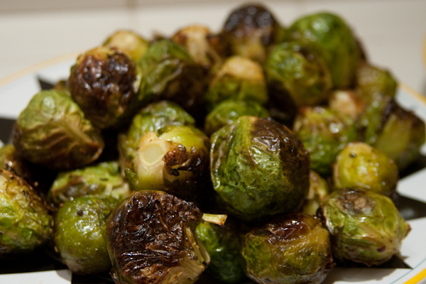

Roasted Brussels Sprouts

Description
This recipe will make you love brussels sprouts. It is simple and delicious. Top them off with
some bacon bits and/or parmesan cheese to level it up.
Ingredients
- Brussels sprouts rinsed
- Olive oil
- Balsamic vinegar
- Salt and any other seasonings of your choice
Steps
- Preheat oven to 375F and line baking sheet with parchment paper.
- Cut ends off sprouts and cut in half. Remove excess leaves.
- Toss sprouts with oil, vinegar, and seasonings.
- Place sprouts cut-side down on baking sheet. Roast for 18-20 minutes,
or until bottoms of sprouts are golden brown
- Enjoy!
Home